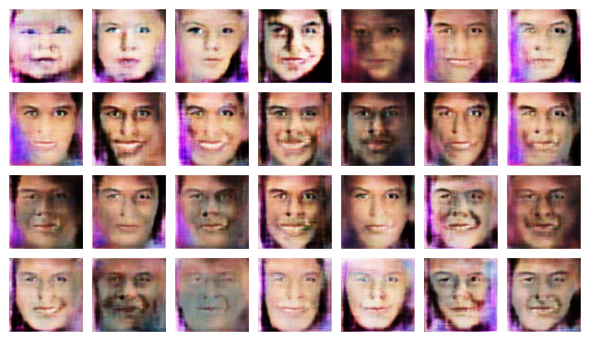
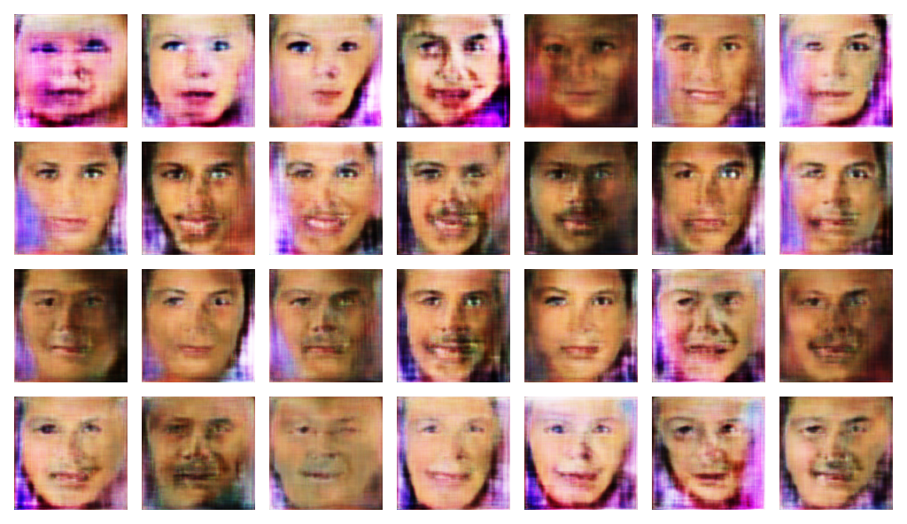
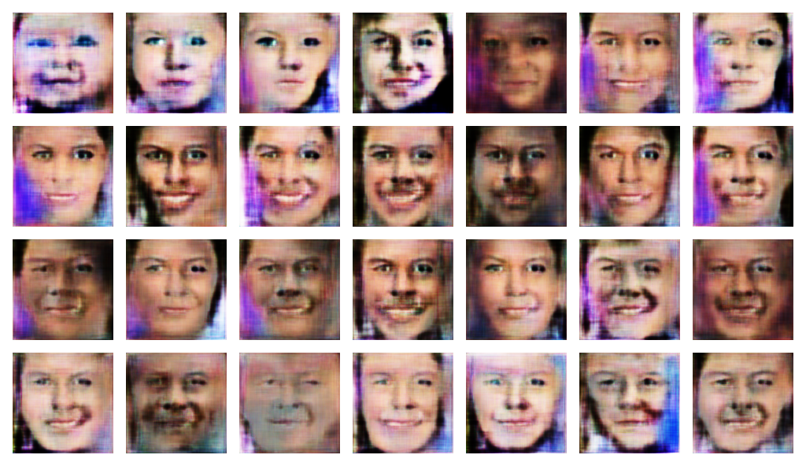

CCGAN (CONTINUOUS-CONDITIONAL-GAN)



Internship on a Deep Learning project aimed on improving the regression accuracy for continuous label learning problems using Generative Adversarial Networks
- Integrated comparision data into the framework to reduce labeled data.
- generated the face images conditioned on age (a continuous variable).
- The age is increasing from top left to bottom right.
- Got nice results on using Triple Generative Adversarial Networks.